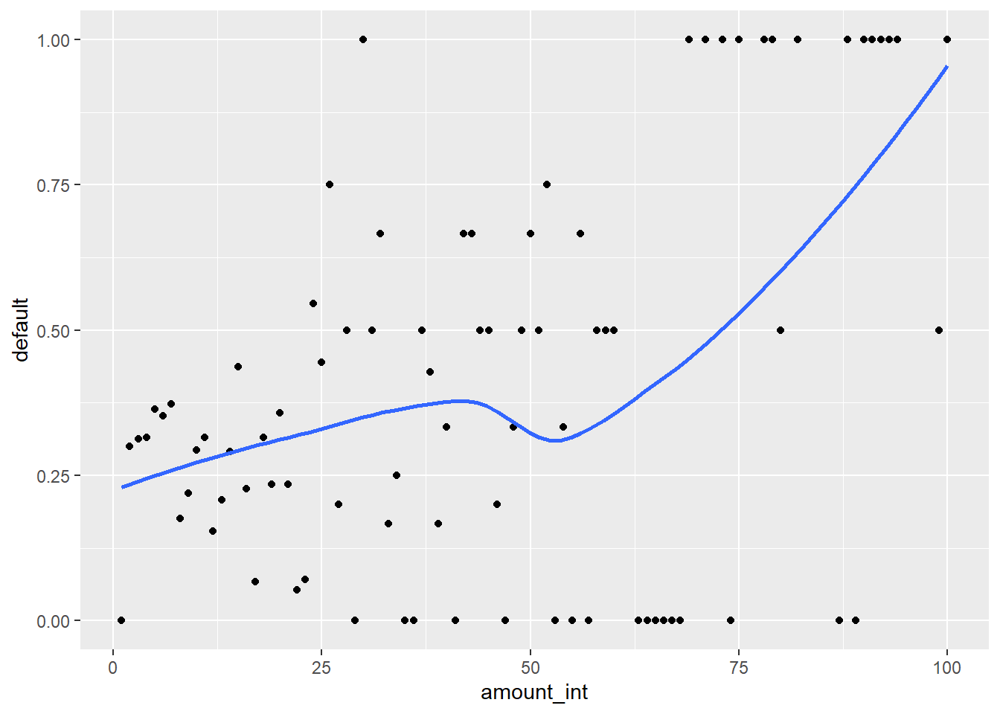
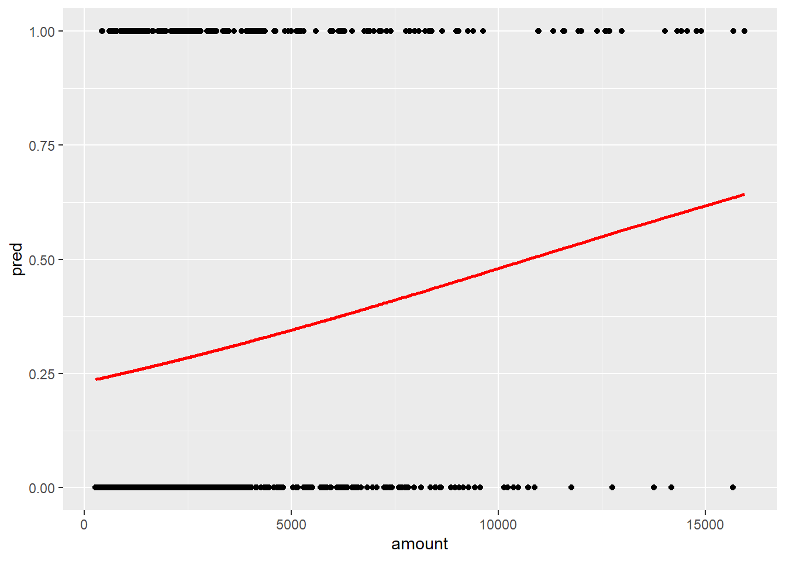

Rows: 1,000
Columns: 17
$ checking_balance <fct> < 0 DM, 1 - 200 DM, unknown, < 0 DM, < 0 DM, unkn…
$ months_loan_duration <int> 6, 48, 12, 42, 24, 36, 24, 36, 12, 30, 12, 48, 12…
$ credit_history <fct> critical, good, critical, good, poor, good, good,…
$ purpose <fct> furniture/appliances, furniture/appliances, educa…
$ amount <int> 1169, 5951, 2096, 7882, 4870, 9055, 2835, 6948, 3…
$ savings_balance <fct> unknown, < 100 DM, < 100 DM, < 100 DM, < 100 DM, …
$ employment_duration <fct> > 7 years, 1 - 4 years, 4 - 7 years, 4 - 7 years,…
$ percent_of_income <int> 4, 2, 2, 2, 3, 2, 3, 2, 2, 4, 3, 3, 1, 4, 2, 4, 4…
$ years_at_residence <int> 4, 2, 3, 4, 4, 4, 4, 2, 4, 2, 1, 4, 1, 4, 4, 2, 4…
$ age <int> 67, 22, 49, 45, 53, 35, 53, 35, 61, 28, 25, 24, 2…
$ other_credit <fct> none, none, none, none, none, none, none, none, n…
$ housing <fct> own, own, own, other, other, other, own, rent, ow…
$ existing_loans_count <int> 2, 1, 1, 1, 2, 1, 1, 1, 1, 2, 1, 1, 1, 2, 1, 1, 2…
$ job <fct> skilled, skilled, unskilled, skilled, skilled, un…
$ dependents <int> 1, 1, 2, 2, 2, 2, 1, 1, 1, 1, 1, 1, 1, 1, 1, 1, 1…
$ phone <fct> yes, no, no, no, no, yes, no, yes, no, no, no, no…
$ default <fct> no, yes, no, no, yes, no, no, no, no, yes, yes, y…Løsningsforslag: Intro. til fairness
Vi starter med å laste inn pakkene vi trenger for å løse oppgavene.
I stedet for å bruke samme datasett som i instruksjonenene velger vi her Credit. Utfallsvariabelen vi er interessert i å predikere er “default” som er en binær variabel som indikerer om en person har misligholdt et lån eller ikke. Vi starter med å laste inn dataene og se på de første radene.
Denne filen er i csv-format, så vi leser inn med read.csv og setter stringsAsFactors = TRUE for å konvertere tekstvariable (eng.: “strings”) til faktorer. Bruker glimpse til å sjekke at innlesning ble riktig. Det skal se ut som følger.
Logistisk regresjon med glm når utfallet er en factor-variabel bruker den første kategorien som ønsket utfall (ofte omtalt som “failure” i metodelitteraturen). Vi kan se hvilken kategori som er referansekategori ved å bruke levels-funksjonen. Det spiller ingen rolle for estimeringen hvilken kategori som er referansekategori, men det spiller en rolle for tolkningen om man predikerer “1” eller “0”. Selv om det er helt ok å bruke en factor-variabel som utfallsvariabel, så er det litt lettere å ikke gå surr i tolkningen hvis det er en binær variabel med 0 og 1.
Det kan gjøres som følger, og lag en tabell etterpå bare for å sjekke at det ble riktig.
credit <- credit %>%
mutate(default = as.numeric(default == "yes"))
table(credit$default)
0 1
700 300 Split datasett
Så kan vi splitte datasettet i to deler, en treningsdel og en testdel. Vi bruker initial_split fra rsample-pakken og gir de to delene navnene credit_train og credit_test. Vi sjekker dimensjonene til treningssettet for å forsikre oss om at det ble riktig med nrow. Det er 750 observasjoner i treningsdatasettet slik det burde være.
Husk å bruk set.seed for å gjøre det reproduserbart. Dette er viktig at venner deg til å gjøre hver gang slik at du ikke får forskjellige resultater hver gang. (På eksamen blir du bedt om å bruke en oppgitt seed for at sensuren skal bli riktig).
[1] 750Plot dataene
Det er ofte lurt å plotte datene før man begynner analysen. Det gir litt intuitiv innsikt og også en sjekk på at dataene ser rimelige ut. Vi kan for eksempel plotte “amount” mot “default” for å se om det er noen sammenheng mellom lånebeløp og sannsynligheten for mislighold.
Her har vi brukt cut for å lage kategorier av lånebeløpene slik at det gir mening å regne en andel i hvert intervall. Vi har valgt 100 kategorier. Vi grupperer så etter disse kategoriene og tar gjennomsnittet av “default” for hver kategori. Vi bruker ggplot for å lage plottet.

Det ser ut til at det er en sammenheng mellom lånebeløp og sannsynligheten for mislighold.
Enkel logistisk regresjon
Som en oppvarming kan vi først tilpasse en modell med kun én variabel: lånebeløpet med variabelen “amount”, i dollar. Denne variabelen har verdier fra drøye 200 til 16000 i treningsdataene.
Call:
glm(formula = default ~ amount, family = "binomial", data = credit_train)
Coefficients:
Estimate Std. Error z value Pr(>|z|)
(Intercept) -1.2004643 0.1233798 -9.730 < 2e-16 ***
amount 0.0001121 0.0000270 4.153 3.28e-05 ***
---
Signif. codes: 0 '***' 0.001 '**' 0.01 '*' 0.05 '.' 0.1 ' ' 1
(Dispersion parameter for binomial family taken to be 1)
Null deviance: 922.97 on 749 degrees of freedom
Residual deviance: 905.64 on 748 degrees of freedom
AIC: 909.64
Number of Fisher Scoring iterations: 4Vi kan nå predikere på bakgrunn av modellen. Det er hensiktsmessig å lage en kopi av datasettet og lage en ny variabel med mutate. Funksjonen predict med argumentet type = "response" gir en sannsynlighet. Altså: for hver observasjon får vi en estimert sannsynlighet på bakgrunn av modellen.

Prediksjon med mange variable
Vi kan nå lage en logistisk regresjonsmodell for å predikere “default” med de andre variablene i datasettet. Vi bruker glm-funksjonen og setter family = "binomial" for å indikere at vi ønsker en logistisk regresjon. Her bruker vi samtlige variable med .. Vi bruker summary for å se på resultatene.
Call:
glm(formula = default ~ ., family = "binomial", data = credit_train)
Coefficients:
Estimate Std. Error z value Pr(>|z|)
(Intercept) -1.811e+00 1.064e+00 -1.701 0.088886 .
checking_balance> 200 DM -7.760e-01 4.009e-01 -1.936 0.052905 .
checking_balance1 - 200 DM -4.072e-01 2.355e-01 -1.729 0.083802 .
checking_balanceunknown -1.798e+00 2.573e-01 -6.986 2.83e-12 ***
months_loan_duration 2.148e-02 9.909e-03 2.168 0.030145 *
credit_historygood 1.111e+00 2.967e-01 3.744 0.000181 ***
credit_historyperfect 1.554e+00 4.986e-01 3.117 0.001829 **
credit_historypoor 6.989e-01 3.736e-01 1.870 0.061427 .
credit_historyvery good 1.645e+00 4.918e-01 3.345 0.000823 ***
purposecar 7.915e-02 3.552e-01 0.223 0.823639
purposecar0 3.179e-01 9.272e-01 0.343 0.731720
purposeeducation 5.181e-01 4.948e-01 1.047 0.295030
purposefurniture/appliances -3.826e-01 3.498e-01 -1.094 0.274031
purposerenovations 2.625e-01 6.358e-01 0.413 0.679752
amount 1.241e-04 4.722e-05 2.629 0.008569 **
savings_balance> 1000 DM -8.343e-01 5.186e-01 -1.609 0.107641
savings_balance100 - 500 DM -1.498e-01 3.090e-01 -0.485 0.627883
savings_balance500 - 1000 DM -3.005e-01 4.532e-01 -0.663 0.507221
savings_balanceunknown -7.125e-01 2.790e-01 -2.554 0.010651 *
employment_duration> 7 years -4.969e-01 3.181e-01 -1.562 0.118262
employment_duration1 - 4 years -3.506e-01 2.648e-01 -1.324 0.185441
employment_duration4 - 7 years -9.335e-01 3.305e-01 -2.825 0.004730 **
employment_durationunemployed -2.000e-01 4.749e-01 -0.421 0.673584
percent_of_income 3.540e-01 9.584e-02 3.694 0.000221 ***
years_at_residence 1.500e-02 9.562e-02 0.157 0.875361
age -1.504e-02 9.868e-03 -1.524 0.127560
other_creditnone -2.737e-01 2.679e-01 -1.022 0.306825
other_creditstore -3.823e-01 4.762e-01 -0.803 0.422100
housingown -1.498e-01 3.406e-01 -0.440 0.659952
housingrent 2.995e-01 3.855e-01 0.777 0.437222
existing_loans_count 4.143e-01 2.201e-01 1.882 0.059835 .
jobskilled -7.532e-02 3.168e-01 -0.238 0.812061
jobunemployed -7.497e-01 7.609e-01 -0.985 0.324484
jobunskilled -3.576e-01 3.853e-01 -0.928 0.353379
dependents 4.942e-02 2.681e-01 0.184 0.853732
phoneyes -3.796e-01 2.248e-01 -1.689 0.091262 .
---
Signif. codes: 0 '***' 0.001 '**' 0.01 '*' 0.05 '.' 0.1 ' ' 1
(Dispersion parameter for binomial family taken to be 1)
Null deviance: 922.97 on 749 degrees of freedom
Residual deviance: 717.64 on 714 degrees of freedom
AIC: 789.64
Number of Fisher Scoring iterations: 5Vi kan først se på resultatene med testdatasettet. Vi lager en ny variabel prob som er sannsynligheten for mislighold. Vi lager så en ny variabel attrition_class som er en faktorvariabel som er “Yes” hvis sannsynligheten er over 0.5 og “No” ellers. Vi bruker mutate for å lage de nye variablene.
Det kan være greit å lagre resultatene i et nytt datasett fremfor å overskrive det gamle. Det gjør det lettere hvis man må kjøre regresjonen på nytt pga feil eller noe slikt.
credit_train2 <- credit_train %>%
mutate(prob = predict(est_multlogit, type = "response")) %>%
mutate(default_pred = (ifelse(prob < .5, 0, 1)))Så kan vi lage en tabell med observert mot predikert. Det kan være greit å bruke table for å lage tabellen først. Så kan man bruke confusionMatrix for å få en del statistikk på resultatene. Gjør gjerne en manuell utregning for å ikke gå unødig surr i hva som er hva. Husk at dette kan variere litt med oppsettet. Et godt råd er å alltid skrive inn positive = ... for å være sikker på at det blir riktig. I dette tilfellet er det “1” som er det positive utfallet.
Da blir f.eks. sensitivitet være andelen av de som faktisk misligholder som blir predikert som mislighold. Det er 114/(114+115) = 0.50. Funksjonen confusionMatrix gir samme resultat slik:
cm <- credit_train2 %>%
select(default_pred, default) %>%
table()
confusionMatrix(cm, positive = "1")Confusion Matrix and Statistics
default
default_pred 0 1
0 468 115
1 53 114
Accuracy : 0.776
95% CI : (0.7444, 0.8054)
No Information Rate : 0.6947
P-Value [Acc > NIR] : 4.072e-07
Kappa : 0.4286
Mcnemar's Test P-Value : 2.523e-06
Sensitivity : 0.4978
Specificity : 0.8983
Pos Pred Value : 0.6826
Neg Pred Value : 0.8027
Prevalence : 0.3053
Detection Rate : 0.1520
Detection Prevalence : 0.2227
Balanced Accuracy : 0.6980
'Positive' Class : 1